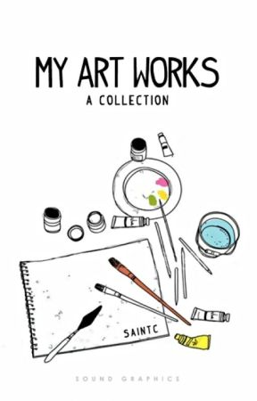

Hello!! Welcome to my blog. This is Likhita a constant learner and enthusiast. This blog is all about me and my work in different areas including my professional portfolio and arts and crafts.
If you are someone who is interested in various disciples, then this blog is for you. Together, we can grow professionally and personally on the level of emotional and mental well being by doing things that help us understand and express things like never before.

This is my professional portfolio containing my personal details, academic details and skills I acquire.
Art is my biggest escape from the real world. I usually talk and celebrate via my drawings.
Journey is more interesting than the destination. So I always take the process/making videos of all my arts and crafts.